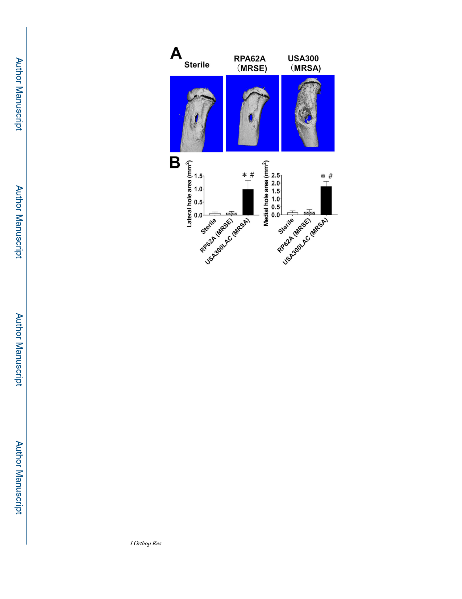

Tomizawa et al.
Page 15
Figure 3. Absence of osteolysis and reactive bone formation in RP62A infected tibiae.
Mice (n=5) were challenged with a transtibial implant containing no bacteria (Sterile),
1.6×105 CFU of RP62A, or 2.1×105 CFU of USA300, euthanized on day 14 post-op, and
the challenged tibiae were analyzed by micro-CT. (A) Representative 3D renderings of a
tibia from each group are shown to illustrate the remarkable osteolysis and reactive bone
formation in USA300 infected tibiae, versus the osseous integrated Sterile implant. Of note
is that the RP62A infected tibiae were grossly indistinguishable from the Sterile implant
group. (B) The lateral and medial hole area of the challenged tibiae were determined from
the micro-CT scans, and the means ± SD are presented (*p<0.05 vs. Sterile; #p<0.05 vs.
RP62A).
J Orthop Res. Author manuscript; available in PMC 2021 April 01.